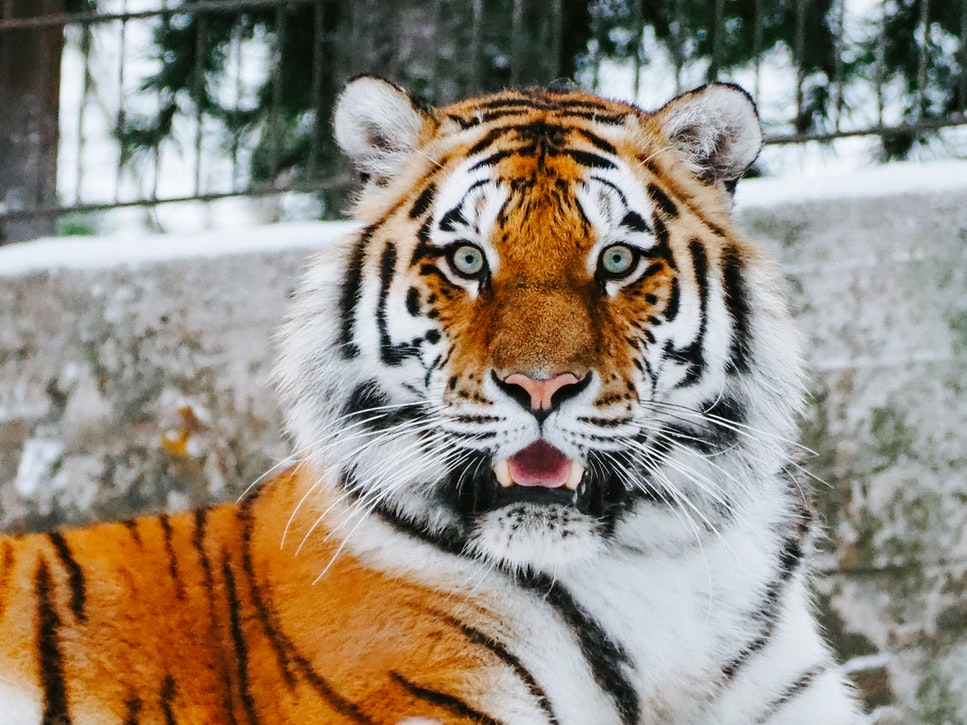
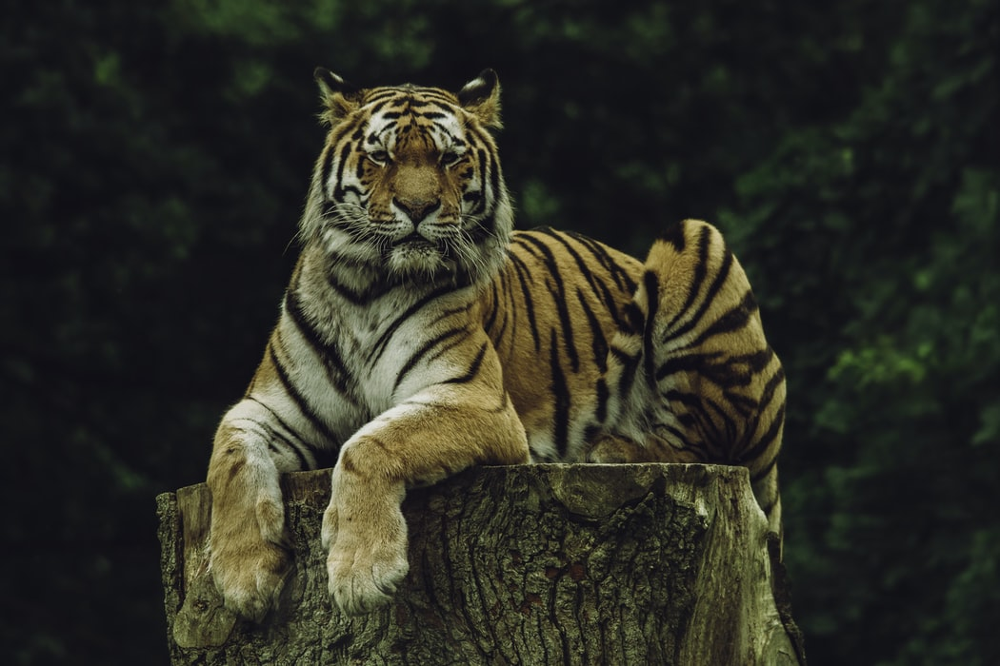

Hổ (Panthera tigris), còn gọi là cọp hay hùm, (tiếng Anh: Tiger) là 1 loài động vật có vú thuộc Họ Mèo (Felidae), và là một trong năm loài "mèo lớn" thuộc chi Panthera.[4] Hổ là một loài thú ăn thịt, chúng dễ nhận biết nhất bởi các sọc vằn dọc sẫm màu trên bộ lông màu đỏ cam với phần bụng trắng. Hổ là loài lớn nhất trong họ Mèo và là động vật lớn thứ 3 trong các loài thú ăn thịt (sau gấu Bắc Cực và gấu nâu). Hổ là một trong những loài động vật có biểu tượng lôi cuốn và dễ nhận biết nhất trên thế giới. Chúng nổi bật trong thần thoại và văn hóa dân gian cổ đại, tiếp tục được miêu tả trong các bộ phim và văn học hiện đại, xuất hiện trên nhiều lá cờ, phù hiệu áo giáp và làm linh vật cho các đội tuyển thể thao. Đặc biệt trong văn hóa phương Đông, hổ được mệnh danh là "chúa sơn lâm". Do đó, chúng là biểu tượng quốc gia của nhiều nước như Ấn Độ, Bangladesh, Malaysia và Hàn Quốc.
Phần lớn các loài hổ sống trong rừng và đồng cỏ (những khu vực mà khả năng ngụy trang của chúng phù hợp nhất). Trong số các loài mèo lớn, chỉ có hổ và báo đốm là bơi giỏi, và thông thường người ta hay thấy hổ tắm trong ao, hồ và sông. Hổ kém mèo nhà và báo hoa mai về khả năng leo trèo. Hổ đi săn đơn lẻ, thức ăn của chúng chủ yếu là các động vật ăn cỏ cỡ trung bình như hươu, nai, lợn rừng, trâu, v.v. Tuy nhiên chúng cũng có thể bắt các loại mồi cỡ to hay nhỏ hơn nếu hoàn cảnh cho phép. Hổ có tập tính lãnh thổ cao và nói chung là một loài săn mồi đơn độc nhưng có nhiều đặc điểm xã hội, đòi hỏi các khu vực sinh sống tiếp giáp rộng lớn, hỗ trợ các nhu cầu của nó đối với con mồi và nuôi dưỡng con cái. Những con hổ con ở với mẹ của chúng trong khoảng hai năm, trước khi chúng trở nên tự lập và rời khỏi phạm vi nhà của mẹ chúng để tìm lãnh thổ riêng của mình. Hổ là một trong số nhiều loài động vật ăn thịt nằm ở mắt xích cuối cùng của các chuỗi thức ăn trong hệ sinh thái tự nhiên. Chúng có tuổi thọ trung bình khoảng 20 năm.
Hổ từng có phạm vi phân bố rộng lớn từ vùng Đông Anatolia thuộc Thổ Nhĩ Kỳ ở phía tây đến lưu vực sông Amur và ở phía nam từ chân đồi của dãy Himalaya đến đảo Bali ở quần đảo Sunda. Kể từ đầu thế kỷ 20, quần thể hổ đã mất ít nhất 93% phạm vi lịch sử của chúng và đã bị tuyệt chủng ở Tây và Trung Á, từ các đảo Java, Bali và ở các khu vực rộng lớn ở Đông Nam Á, Nam Á, Trung Quốc. Quần thể hổ ngày nay bị chia cắt, trải dài từ rừng ôn đới Siberia đến rừng nhiệt đới và cận nhiệt đới ở tiểu lục địa Ấn Độ và Sumatra. Hổ được liệt kê là loài có nguy cơ tuyệt chủng trong Sách đỏ IUCN kể từ năm 1986. Tính đến năm 2015, quần thể hổ hoang dã toàn cầu được ước tính có khoảng từ 3.062 đến 3.948 cá thể trưởng thành, giảm khoảng 100.000 (95%) so với đầu thế kỷ 20, với hầu hết các quần thể còn lại xảy ra trong các khu vực nhỏ bị cô lập với nhau. Những lý do chính cho sự suy giảm số lượng hổ bao gồm phá hủy môi trường sống, phân mảnh môi trường sống và nạn săn trộm. Hổ thường bị săn bắt để lấy da, xương, hay các bộ phận khác. Điều này, cùng với việc chúng thường sống ở một số nơi đông dân trên Trái Đất, đã gây ra những xung đột đáng kể với con người.
Hổ từng có phạm vi rộng khắp lục địa châu Á từ phía đông Thổ Nhĩ Kỳ và Transcaucasia đến dãy núi Altai, hồ Baikal và bờ biển Nhật Bản, và ở phía nam từ tiểu lục địa Ấn Độ qua Đông Nam Á đến các đảo Sunda của Sumatra, Java và Bali. Kể từ khi kết thúc thời kỳ băng hà cuối cùng khoảng 20.000 năm trước, sự phân bố của chúng ở các quốc gia phía bắc có lẽ đã bị hạn chế bởi thời kỳ tuyết sâu kéo dài hơn sáu tháng. Chúng chủ yếu gắn bó với môi trường sống trong rừng. Phân bố của chúng gắn chặt với phân bố và mật độ của các loài động vật móng guốc. Quần thể hổ phát triển mạnh nơi quần thể thuộc bộ huơu nai, trâu bò và lợn ổn định.
Hổ có thân hình vạm vỡ với chân trước mạnh mẽ, đầu to và đuôi dài khoảng một nửa cơ thể. Xương chậu của nó dày và nặng, và màu sắc khác nhau giữa các sắc thái của màu cam và màu nâu với các vùng bụng màu trắng và các sọc đen dọc đặc biệt là duy nhất ở mỗi cá thể. Các sọc có khả năng thuận lợi cho việc ngụy trang trong thảm thực vật như cỏ dài với các kiểu ánh sáng và bóng râm thẳng đứng, màu xam giúp chúng trở nên tàng hình trong mắt những con mồi. Hổ là một trong số ít loài mèo có sọc; người ta không biết tại sao hoa văn đốm và hoa hồng/hoa mai là kiểu ngụy trang phổ biến hơn trong số các loài họ mèo. Mẫu lông của hổ vẫn có thể nhìn thấy khi nó được cạo. Điều này không phải do sắc tố da, mà là do râu và nang lông dính trong da, tương tự như râu người, và phổ biến với những con mèo lớn khác. Chúng có bộ lông phát triển giống như bờm quanh cổ và hàm và râu dài, đặc biệt là ở con đực. Con ngươi có hình tròn với tròng vàng. Đôi tai nhỏ, tròn có một đốm trắng nổi bật ở mặt sau, được bao quanh bởi màu đen. Những "con mắt" giả này, được gọi là ocelli, dường như đóng một vai trò quan trọng trong giao tiếp trực quan.
Hộp sọ của hổ tương tự như hộp sọ của sư tử, với vùng phía trước thường ít bị lõm hoặc xẹp, và vùng sau hấp thụ dài hơn một chút. Hộp sọ sư tử cho thấy mở mũi rộng hơn. Do sự thay đổi kích thước hộp sọ của hai loài, cấu trúc của hàm dưới là một chỉ số đáng tin cậy để nhận dạng chúng. Hổ có hàm răng khá to; răng nanh hơi cong của nó là dài nhất trong số các con mèo còn sống với chiều dài lên tới 90 mm (3,5 in).
Khi không chịu sự xáo trộn của con người, hổ chủ yếu hoạt động ban ngày. Giống như các loài trong họ mèo khác, hổ có khả năng trèo cây nhưng chúng không quá khéo léo trong việc này, nên rất hiếm khi trèo; tuy nhiên có các trường hợp đặc biệt đã được ghi nhận lại như một con hổ đã cố gắng leo cây để săn khỉ[10]. Chúng là một vận động viên bơi lội cừ khôi và thường tắm trong ao, hồ và sông để giữ mát trong cái nóng ban ngày. Các cá thể có thể vượt sông rộng tới 7 km (4,3 mi) và có thể bơi tới 29 km (18 mi) trong một ngày. Trong những năm 1980, một con hổ đã được quan sát thấy thường xuyên săn con mồi qua hồ nước sâu trong Công viên Quốc gia Ranthambhore.
Trong tự nhiên, hổ là loài động vật thuộc nhóm động vật ăn thịt đầu bảng, với thân thể to lớn, tính hung hãn dữ tợn, bộ lông vằn vện, hàm răng khỏe, móng vuốt nguy hiểm, sức mạnh, bản lĩnh, tính kiên trì và tốc độ chạy khá tốt (cao nhất lên đến 65 km/h) nên hổ được mệnh danh là chúa sơn lâm và ít khi có kẻ thù tự nhiên. Những con hổ được cho là chủ yếu là động vật săn mồi về đêm, nhưng ở những khu vực mà con người không hiện diện, những thiết bị điều khiển từ xa và bẫy camera đã ghi lại cảnh chúng săn mồi vào ban ngày. Hổ săn mồi theo kiểu rình và vồ, chế ngự con mồi của chúng từ mọi góc, thông thường từ những cuộc tập kích và bất ngờ cắn vào cổ, thông thường là để làm gãy cột sống hay khí quản của con mồi, hay làm tổn thương tĩnh mạch hoặc động mạch chủ. Là một con thú bơi lội giỏi, hổ có khả năng giết chết con mồi ngay cả khi chúng đang bơi.[13] Một số con hổ thậm chí phục kích cả các con thuyền để bắt người hay cá của họ.